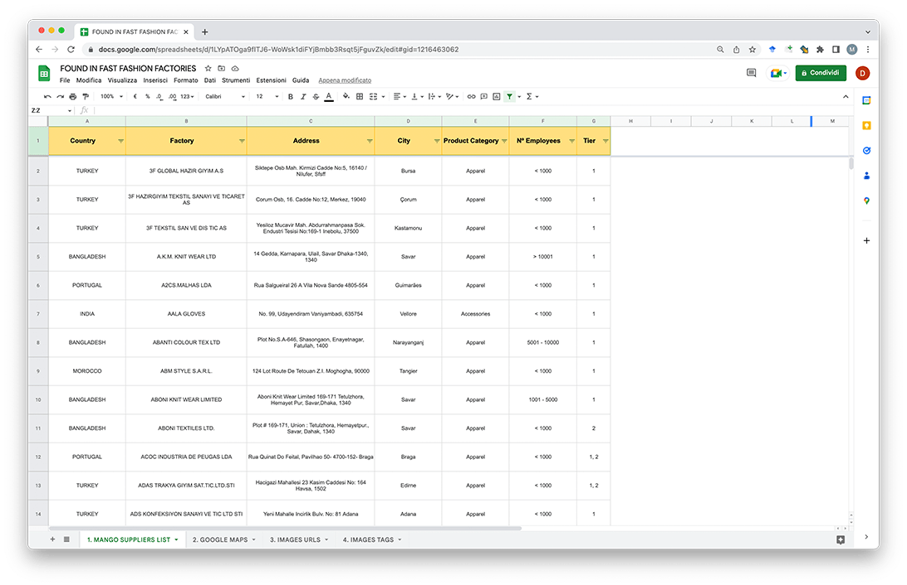
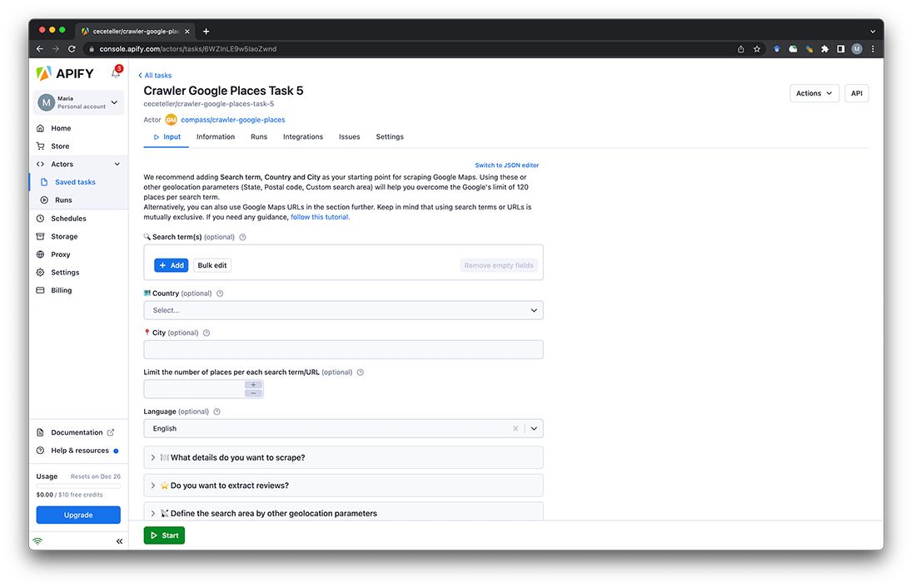
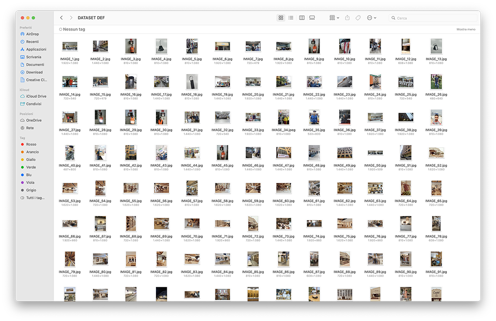
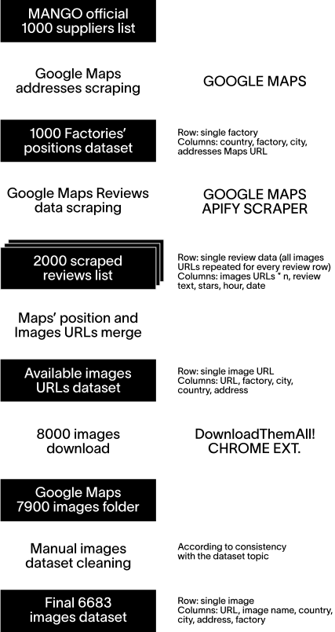
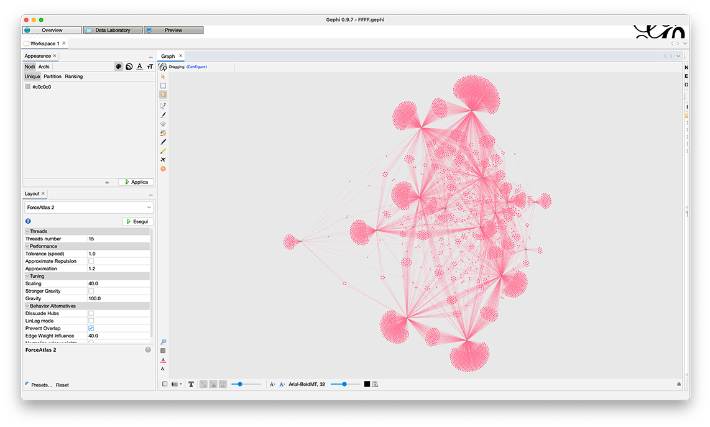
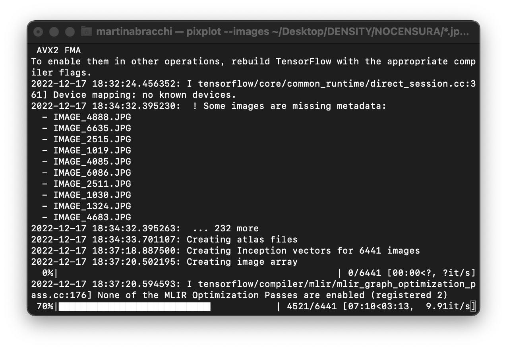
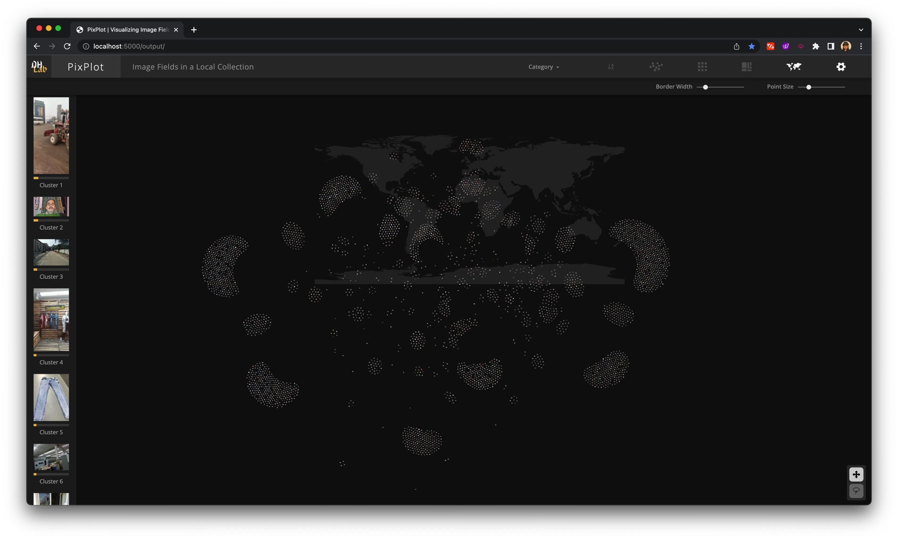
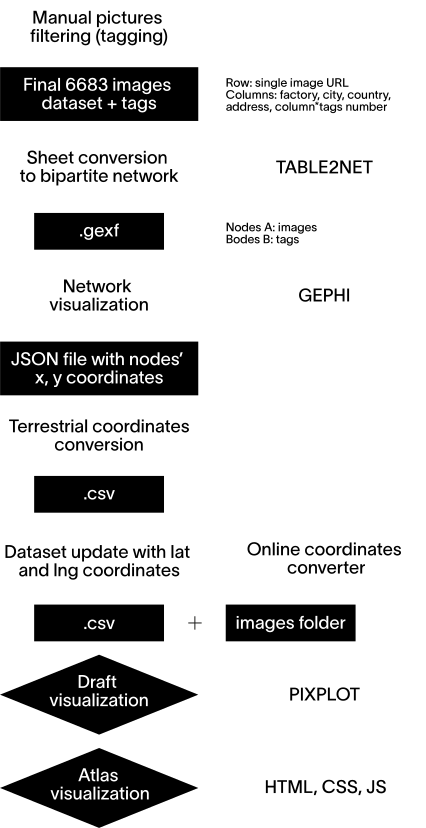

01
WHAT Found in Fast Fashion Factories
WHAT Found in Fast Fashion Factories
collects 6683 photos posted on Google Maps with the addresses of 1000 garment factories around the world.
All the addresses were found in
the list of level 1 (tier 1) suppliers that
have produced for MANGO in 2021.
All the addresses were found in
the list of level 1 (tier 1) suppliers that
have produced for MANGO in 2021.
Invisible values
Invisible labour
02
Fashion is one of the most labour-dependent industries, but many companies have decided
to bypass production completely, by switching
their homeland production with contracted-out manufacturing, especially in low-income countries. In this way, their workforce is not under their responsibility anymore,
as it is the end of a very long supply chain.
This is part of a general tendency
of corporations to “dematerialise” themselves: since the 1990s, many started to shift their focus and investments from production to branding, from objects to ideas.
Regaining
WHY
As brands distanced themselves from the material processes, so have clients. They know the real
value they are paying for is not a tangible product anymore, but the concept it represents.
All of the processes ended up being submerged, making it very hard to imagine that those clothes
were once made by someone, somewhere far away.
By republishing the data uploaded in the factories areas, FFFF makes everyday objects, people
and spaces that are universally familiar accessible
for people to consult. The goal is to get closer to the reality of these places and restore the discarded physicality of the fashion garments industry.
03
HOW Research
HOW Research
We downloaded the factories list from the Social Responsability section on shop.mango.com¹. These factories are not owned by MANGO and supply multiple other fashion companies.
¹(latest update: December 2021)
¹(latest update: December 2021)

We searched for the addresses on Google Maps and gathered the real available positions’ URLs.

In this phase of the project we discovered that more than 400 factories couldn’t be found on Maps, including 262 Chinese factories, as it can be seen in the map↗. We scraped all the available positions’ reviews through Google Maps Reviews Apify↗.

At this point a new dataset was created, merging together the positions’ URLs previously scraped with the images ones.

From this dataset, all the images were then downloaded using Google Chrome DownloadThemAll! extension. This folder was then cleaned from the images that did not fit into the research topic.

After we sorted all these images and obtained the clusters, we passed onto the design of the website visualizations.
Got the final 6683 pictures together, they were clustered according to specific filters that we chose according to the most interesting elements that could tell more about these places.


HOW TO READ
03
HOW Design
HOW Design
For the design phase of the project, we looked for and chose 16 interesting filters to visualize the pictures in the website’s atlas.

A cleaned version of the dataset was converted to a bipartite network through table2net↗.
The network was then visualized in Gephi, it was spatialized with Force Atlas 2.0. Expansion and no overlaps algorithms were used.
The network was then visualized in Gephi, it was spatialized with Force Atlas 2.0. Expansion and no overlaps algorithms were used.

In this way, we made the clustered visualization for the atlas images navigation. The x, y coordinates of the network’s nodes were then converted into terrestrial coordinates in order to respect Pixplot’s umap visualization criteria.
This conversion was done through an online coordinates converter tool↗ and the result was combined with the previous dataset.
This conversion was done through an online coordinates converter tool↗ and the result was combined with the previous dataset.

Finally, the dataset and the images folder could be uploaded in Pixplot. Pixplot uses a convolutional neural network in order to cluster visually similar images near one another in a web browser.

We chose to use this in order to take advantage of this infrastructure’s way of handling big numbers of images lightly, but importing our project clusters and metadata.
The default visualization of Pixplot was then customized in HTML, CSS and JavaScript, in order to design the interactions and the different atlas’ filters visualizations.

HOW TO READ
04
WHO Found in Fast Fashion Factories
WHO Found in Fast Fashion Factories
is a website developed during for the DensityDesign Lab Final Synthesis Studio of the Master in Communication Design
at Politecnico di Milano.
at Politecnico di Milano.
Giovanni Bonassi
Martina Bracchi
Cecilia Buonocunto
Silvia Casavola
Kateryna Lapshyna
Vlada Ershiva
Matteo Visini
Martina Bracchi
Cecilia Buonocunto
Silvia Casavola
Kateryna Lapshyna
Vlada Ershiva
Matteo Visini
PROFESSORS
Michele Mauri
Simone Vantini
Gabriele Colombo
Angeles Briones
Salvatore Zingale
Michele Mauri
Simone Vantini
Gabriele Colombo
Angeles Briones
Salvatore Zingale
ASSISTANTS
Tommaso Elli
Andrea Benedetti
Elena Aversa
Arianna Bellantuono
Alessandra Facchin
Tommaso Elli
Andrea Benedetti
Elena Aversa
Arianna Bellantuono
Alessandra Facchin
Politecnico di Milano
Communication Design MSc
Final Synthesis Design Studio
sect. C3
DensityDesign Lab
18th Edition
A.Y. 2022/23
Communication Design MSc
Final Synthesis Design Studio
sect. C3
DensityDesign Lab
18th Edition
A.Y. 2022/23